process
01
Get Inspired
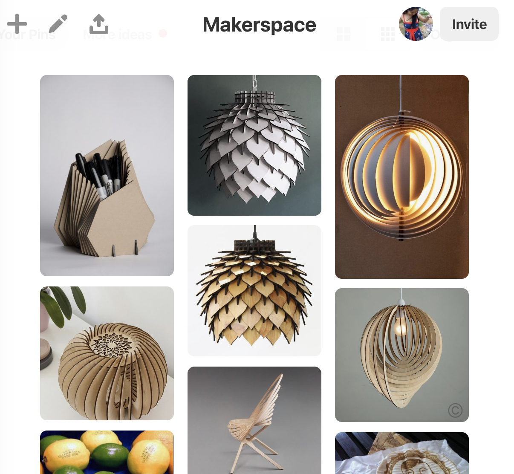
I start my process by looking at different geometric shapes on Pinterest.
My Makerspace board is here.
02
Sketch
I'm not strong at sketching, but I'll draw out some shapes to help me visualize the 3D nature of what I'm going to make in 2D.
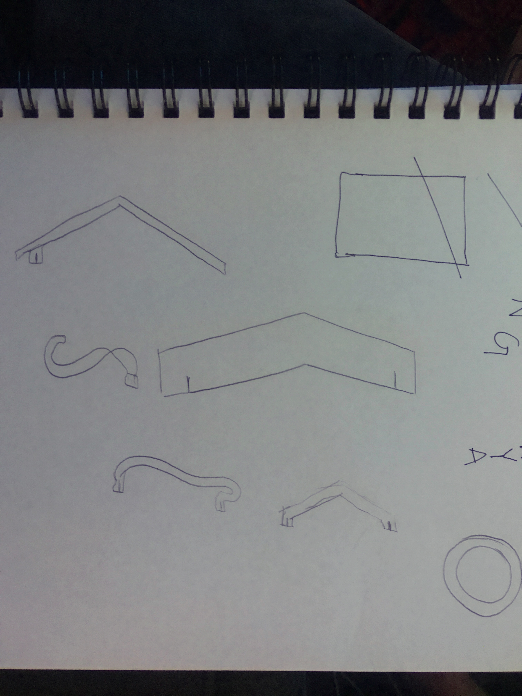
03
Build Vector Files
Some considerations:
- I wanted to rotate an object evenly around a circle but couldn't quite remember how, so I watched a YouTube video to figure out what was going on and then went from there.
- Determine how large of a lamp you want. I made the outside 4 and the inside 2.3.
Build the top and bottom panel holders.
- Use the ellipse tool to make both circles. (You can change the color so it's easier to see the circles)
- Align the two circles by
- Selecting both circles
- Press "Horizontal align center"
- Press "Vertical align center"
- Keep both circles selected. Make sure the smaller one is in the front In the pathfinder window, select "Minus front" 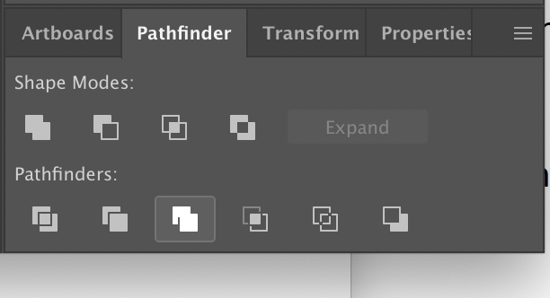
- Use the rectangle tool to make a rectangle Change the width of the rectangle to match the thickness of the cardboard. My cardboard had a width of .119in, so I made mine .118in.
- Horizontal align the rectangle on top of the circle
- Overlap the rectangle and circle that a little under half of the rectangle is in the circle
- Shift select both shapes
- Select rotate icon
- Option + Click the center of the circle
- In the dialogue box, pick a number that can be evenly divided into 360. I picked 24. 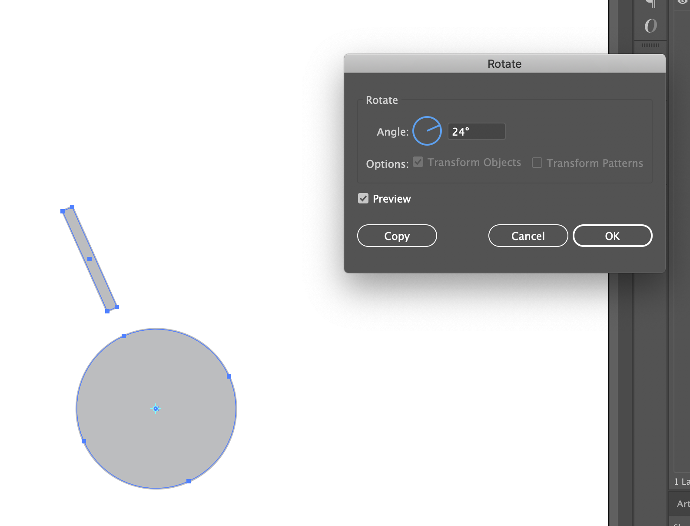
- Press copy button
- Duplicate the action by pressing command + D 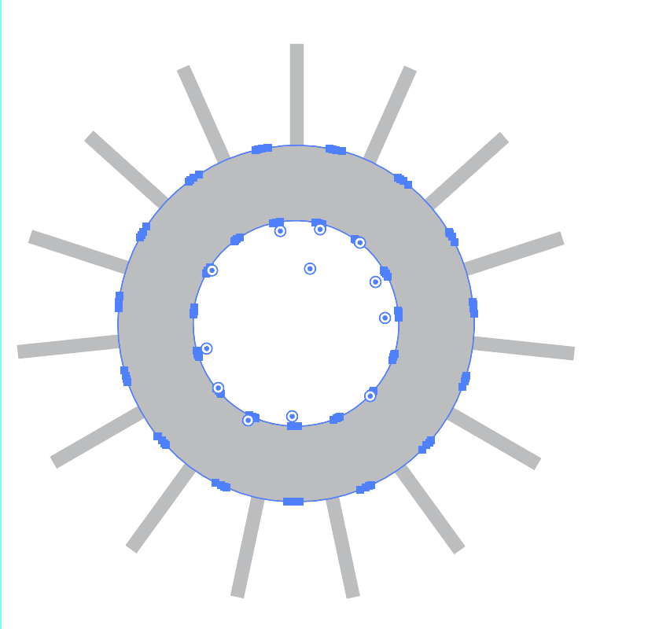
- Delete the extra circle layers
- Select all of the rectangles
- Select Object > Transform > Transform Each 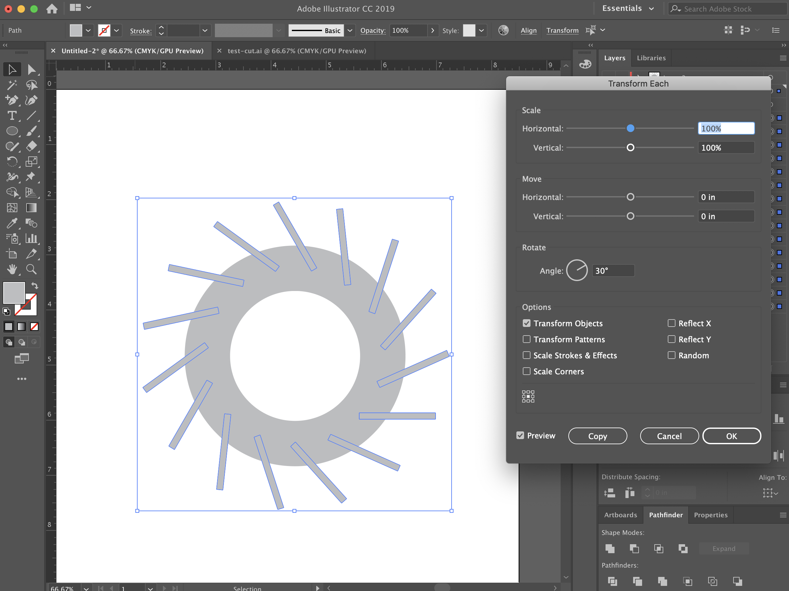
- Change angle in "Rotate" box
- Select preview
- Select everything in the layer. Make sure the cut out circle is the very bottom layer. Go to pathfinder and select "Minus Front"
- Change shape to have no fill and black outline
- Create the bottom of the lamp by copying and pasting the circle 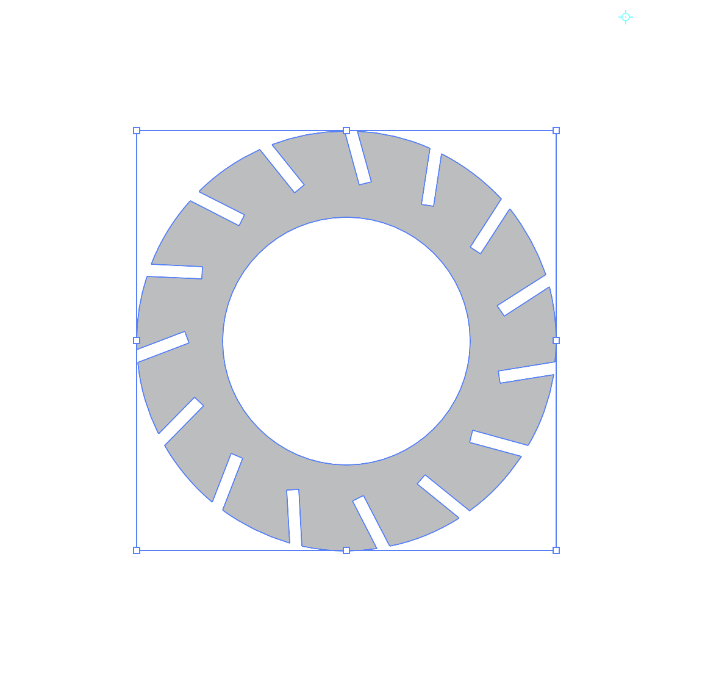
(Note: I forgot to overlap the rectangle and circle for this shot.)
Create the panels
- Create 2 hexagons
- Set one height at 7in
- The other height 6.2in
- Add a guideline that cuts the shape down the middle
- Delete part of the shape by
- Create a rectangle that meets at the guideline
- Use the pathway tool to delete the layer on top 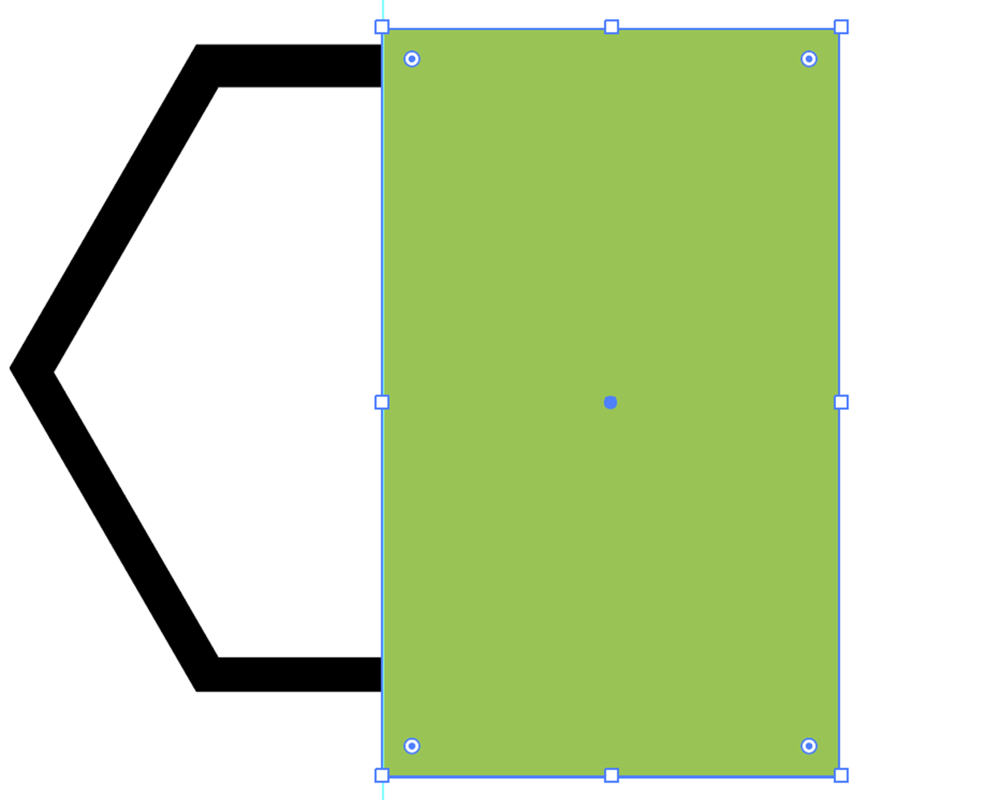
- Repeat the process again so the width of the top and bottom is 1/4 of what it was before
- Cut out the notches
- .119in height rectangle half way between the top of bottom of each arm
- The rectangle should be less deep into the shape to accommodate for the circle notches 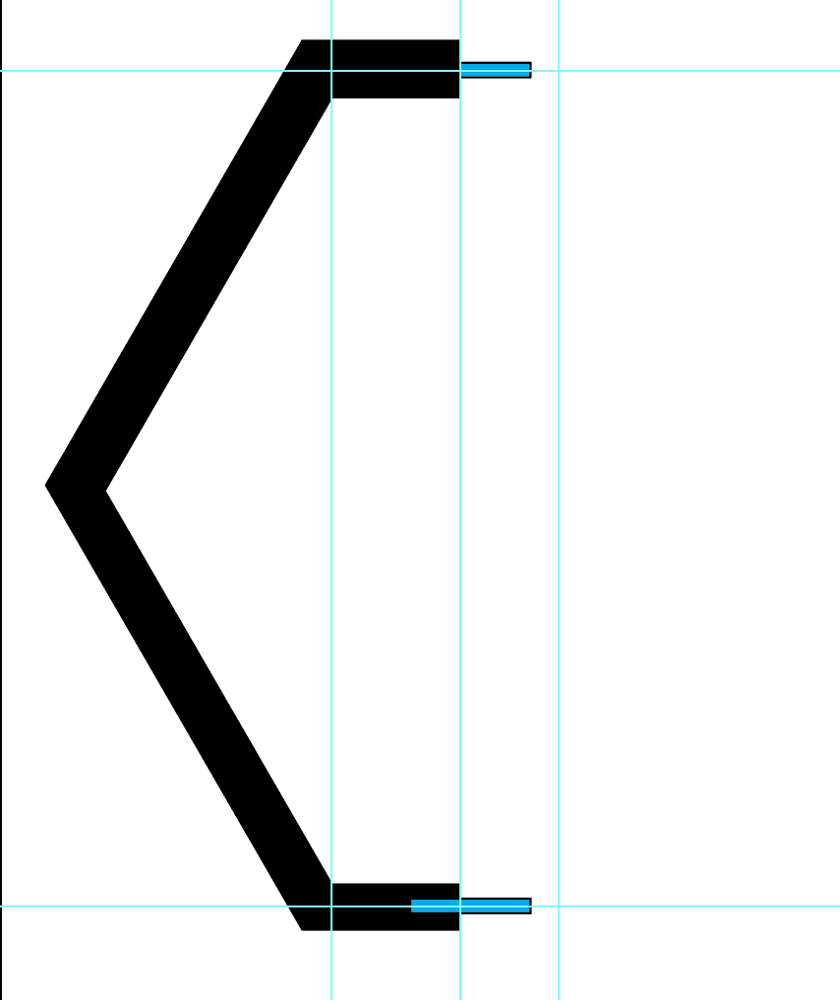
- Vertically align the two
- Minus front the rectangles from the shape 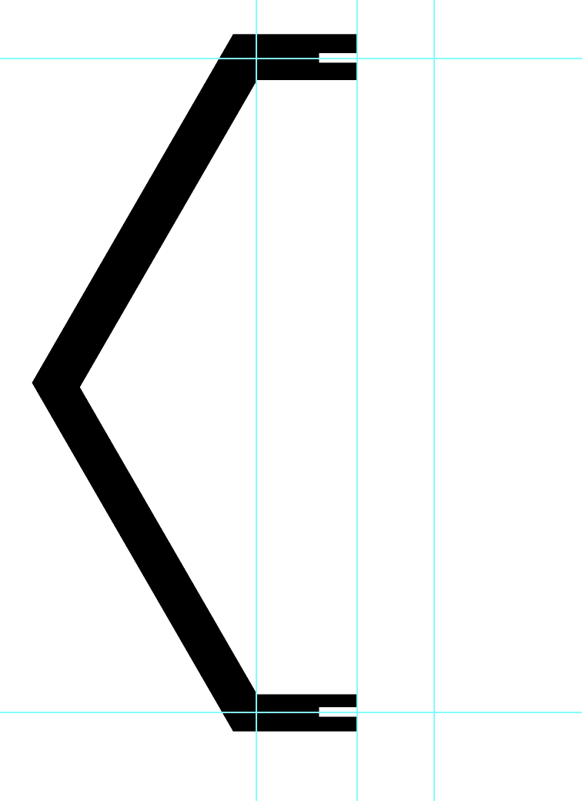
- Change the fill to none
- Repeat the shape 15 times
- Select all the objects on the artboard and change the stroke width to .001pt 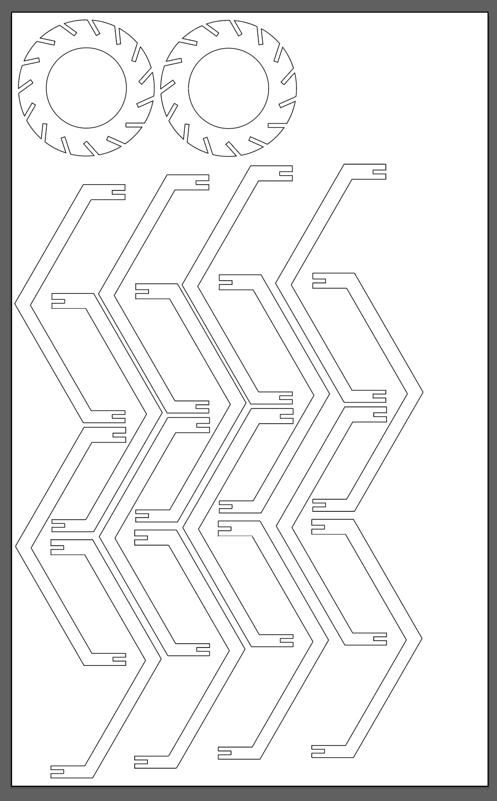
kit design and execution
Once the file is made, below are the steps for printing and assembly.
01
Lasercutting Details
My largest challenge was finding scrap cardboard the same width as my original piece that I had based my design off. I was hoping to buy cardboard, but The Mill makerspace was out. As a result, I had to break up my original Illustrator
files into separate files and then turn different layers on and off to lasercut.
Printing Tips:
- Make sure the artboard is the same size as the material that you're printing on, and make sure that it matches the Piece Size in the Epilog print setting window
- There are a total of three print windows. To make sure that the preview window is accurate, you'll have to press "Setup" in Window 1 and "Print" in Window 2 twice.
Print Window 1
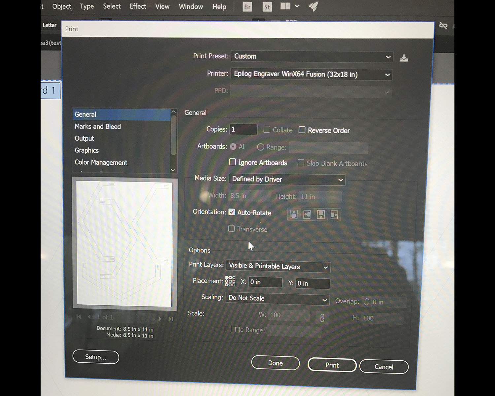
Print Window 2

Print Window 3
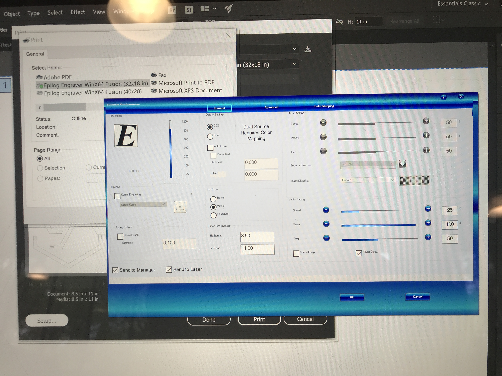 - Frequency: 50%
Steps
- Prep for printing.
- Make sure you have a laptop that has the correct driver needed for the printer. In my case, I had to borrow a laptop from The Mill, save my file on my laptop to a USB stick and plug it into the laptop that I borrowed
- Bring the printer laptop, dongle (if needed), and your USB to the laser cutter area since you’ll need to watch your print as it happens
- Prep the laser cutter space
- Turn on the exhaust 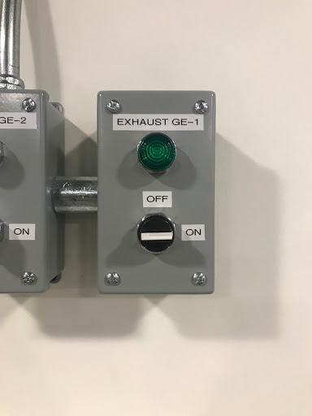
- Press the black switch on the right of the machine to turn on the fan 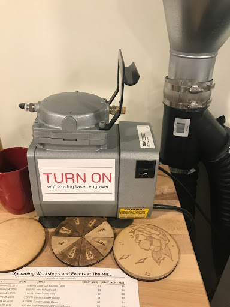
- Press the black switch below the red emergency stop button to turn on the laser cutter 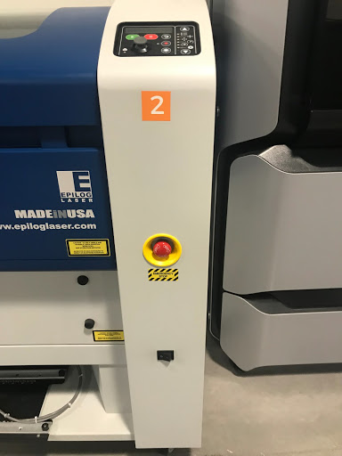
- Prep the laser cutter.
- Put the metal focus on the hook. Video reference here. 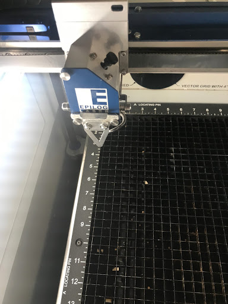
- Adjust the table settings through the control panel on the right of the laser cutter. Use the down button to select the second option in the panel that will move the table up and down. Use the joystick on the control panel to move it up and down. 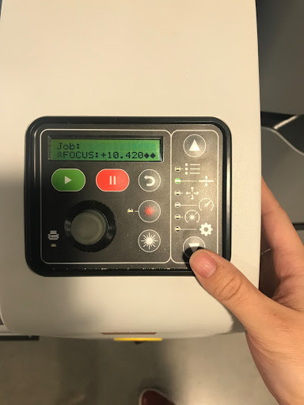
- Move the table so the tip of the focus is just touching the material
- Set up your print settings for the machine
- Go to File > Print or Command + P
- Select the right printer
- Edit the settings in Print Windows 1, 2, and 3 as mentioned above and change the power, speed, and piece size.
- Print Settings:
- Speed: 25%
- Power: 100%
- Frequency: 50%
- Once you've pressed print in all the windows, go to the laser cutter and press the green button
02
Assembly Execution Details
Assembly is pretty straightforward. The key is to make sure that you match the leg to the same top and bottom notches.

source files
- Final Illustrator file with all assets
- Cut up Illustrator files that had the legs and shapes broken up to print on different sized cardboard
- Print Settings:
- Speed: 25%
- Power: 100%
- Frequency: 50%